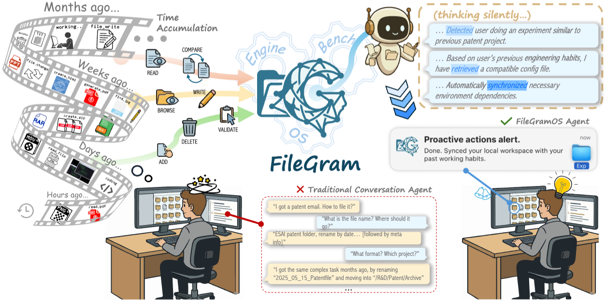
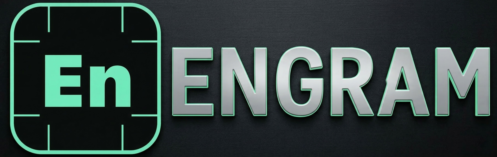
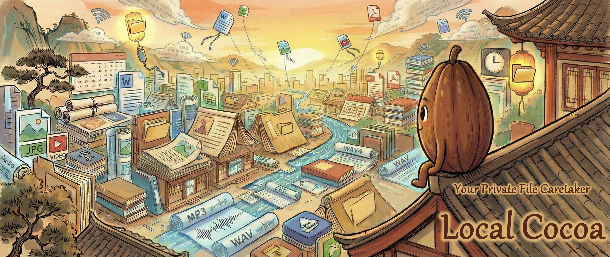

arXiv 202601About
I am currently a Founding Team Member at Synvo AI. Previously, I was a Core Contributor at LMMs-Lab, where I was on an exciting journey towards LMMs and feeling the AGI.
Prior to this, I obtained my MEng (by Research) degree at MMLab@NTU, where I was fortunate to be advised by Prof. Ziwei Liu and to have received kind and valuable guidance from Jingkang Yang and Bo Li. I obtained my bachelor's degree in Artificial Intelligence from BUPT in 2024.
Additionally, I had a wonderful time as an intern at the Shanghai AI Laboratory under the mentorship of Prof. Ziwei Liu, and I also completed internships at NLPR@CASIA and HAOMO.AI.
My research lies in Multimodality, Egocentric AI, and Agentic Memory.
Feel free to reach out for collaborations, questions, or just to chat!
02News
▌
2026
- Feb 11 Released Engram Teams — upgraded version with team-based AI workflow support.
- Feb 09 Demo-ICL: In-Context Learning for Procedural Video Knowledge Acquisition is released on arXiv.
- Feb 02 Released Engram — a privacy-first AI memory layer.
- Jan 31 Graduated from NTU with MEng (by Research). Thesis: Egocentric Perception and Memory: From Embodied Understanding to a Lifelong Assistant.
- Jan 01 New blog post at Synvo AI: The Digital Avalanche: Building the Memory Layer for Next-Gen Corporation AI Agents.
2025
- Apr 29 Aero-1-Audio: Our first generation of lightweight audio models, outperforming Whisper and Qwen-2-Audio.
- Mar 01 EgoLife is accepted by CVPR 2025.
- Jan 23 LMMs-Eval is accepted by NAACL 2025 Findings.
- Jan 01 Joined Synvo AI as a Founding Team Member.
2024
- Aug 13 Joined MMLab@NTU as a master student.
- Jul 17 Released LMMs-Eval, a comprehensive benchmark for evaluating Large Multimodal Models.
- Jul 01 Octopus is accepted by ECCV 2024.
- Jun 12 Released lmms-eval/v0.2.0 to support video evaluations.
2023
- Oct 12 Introduced Octopus, an embodied vision-language programmer that plays GTA-V.
- Aug 20 PSG4D is accepted as NeurIPS 2023 Spotlight.

04Projects
Habitus
A proactive AI agent built on FileGram's behavioral trace and content delta philosophy. Turns the proactive agent setting from research into a real product.

Engram Suite
Privacy-first AI memory layer — "Signal for AI Memory." End-to-end encrypted memory system for AI assistants with zero-knowledge sync.

Cocoa Suite
A local AI assistant that transforms files into actionable memory through semantic understanding. Fully private, on-device, zero cloud dependency.